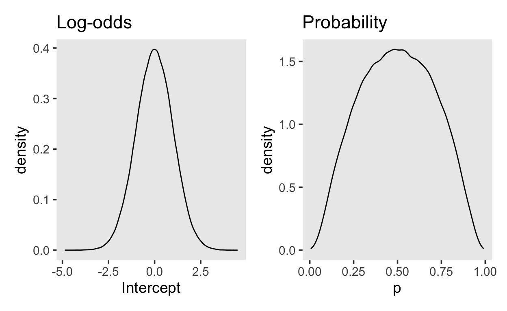
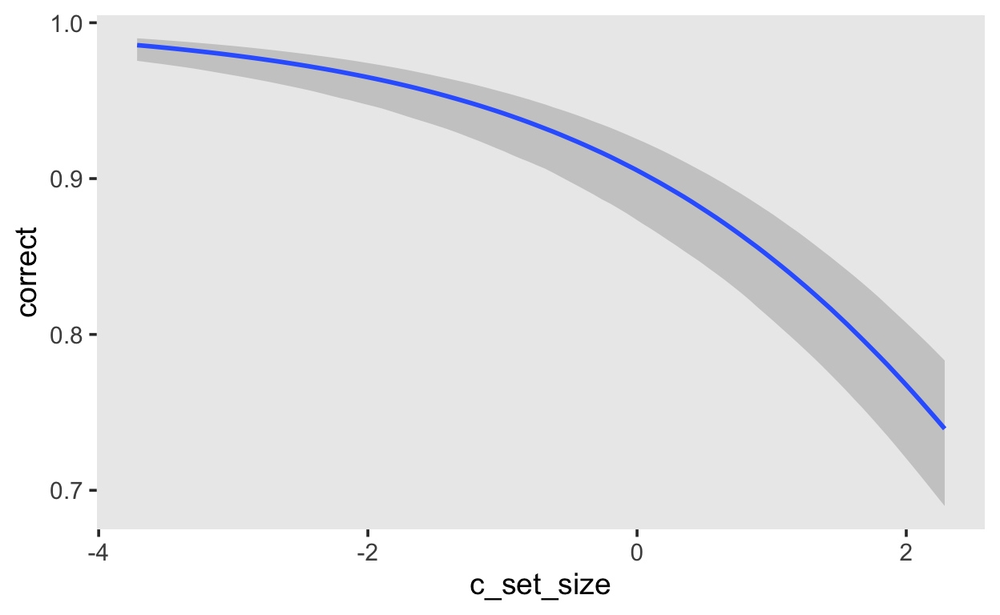

Logistic Regression
This example is based onBayesian Data Analysis for Cognitive Science and uses data from (oberauerWorkingMemoryCapacity2019?).
In this study, the effect of word list length on working memory capacity was assessed. Subjects were shown word lists of varying length (set size: 2, 4, 6, or 8 words) and were required to recall the correct word according to its position in the list. A single trial is shown in Figure 1.

Figure 1: Subjects were required to indicate the correct word from the studied list according to its cued position.
recall <- read_csv(file = "data/recall-oberauer.csv")
recall <- recall |>
mutate(subj = as_factor(subj))
glimpse(recall)
Rows: 12,880
Columns: 9
$ subj <fct> 10, 10, 10, 10, 10, 10, 10, 10, 10, 10, 10â¦
$ session <dbl> 1, 1, 1, 1, 1, 1, 1, 1, 1, 1, 1, 1, 1, 1, â¦
$ block <dbl> 1, 1, 1, 1, 1, 1, 1, 1, 1, 1, 1, 1, 1, 1, â¦
$ trial <dbl> 1, 2, 3, 4, 5, 6, 7, 8, 9, 10, 11, 12, 13,â¦
$ set_size <dbl> 4, 4, 2, 8, 6, 2, 8, 6, 2, 6, 4, 8, 8, 8, â¦
$ response <dbl> 430, 925, 533, 45, 477, 1105, 828, 193, 31â¦
$ rt <dbl> -1.000, 1.586, 1.399, -1.000, 2.301, 2.424â¦
$ correct <dbl> 1, 1, 1, 0, 1, 1, 1, 1, 1, 1, 1, 1, 1, 0, â¦
$ response_category <chr> "correct", "correct", "correct", "new", "câ¦Count the number of subjects and number of trials per set size for each subjetc.
recall |> distinct(subj) |> count()
# A tibble: 1 x 1
n
<int>
1 20recall |> count(subj, set_size)
# A tibble: 80 x 3
subj set_size n
<fct> <dbl> <int>
1 1 2 92
2 1 4 138
3 1 6 184
4 1 8 230
5 2 2 92
6 2 4 138
7 2 6 184
8 2 8 230
9 3 2 92
10 3 4 138
# ⦠with 70 more rowsThe latter is equivalent to:
recall |> group_by(subj, set_size) |>
summarize(N = n())
# A tibble: 80 x 3
# Groups: subj [20]
subj set_size N
<fct> <dbl> <int>
1 1 2 92
2 1 4 138
3 1 6 184
4 1 8 230
5 2 2 92
6 2 4 138
7 2 6 184
8 2 8 230
9 3 2 92
10 3 4 138
# ⦠with 70 more rowsBefore fitting any models, we will center the set_size variable.
recall <- recall |>
mutate(c_set_size = set_size - mean(set_size))
We are interested in subjectsâ probability of responding correctly based on the set size. First, we can get a maximum likelihood estimate:
recall_sum |>
ggplot(aes(set_size, accuracy)) +
geom_line() +
geom_point() +
facet_wrap(~subj)
Likelihood
Instead of computing point estimates, we can model these data using a generalized linear model. We know that each response is either correct or an error, and thus the most sensible distribution is a Bernoulli.
\[ correct_i \sim Bernoulli(\theta_{i})\]
Each response \(i\) is drawn from a Bernoulli distribution, with a probability of being correct of \(\theta_i\). THe probability of an error response is \(1-\theta_i\).
We want to predict the probability of getting a correct response using a linear predictor. Since the linear predictor in on the real line, and the parameter we are trying to predict lies in the interval \([0, 1]\), we need to transform the linear predictor. This is conventionally written as
\[ g(\theta_i) = logit(\theta_i) = b_0 + b_{set\_size} \cdot set\_size_i \] with the link function \(g()\) being applied to the parameter of the likelihood distribution. An alternative way of writing this is
\[ \theta_i = g^{-1}(b_0 + b_{set\_size} \cdot set\_size_i) \]
where \(g^{-1}\) is the inverse link function.
In a logistic regression, the link function is the logit function:
\[ logit(\theta) = log \bigg( \frac{\theta}{(1-\theta)} \bigg) \] and gives the log-odds, i.e. the natural logarithm of the odds of a success.
Therefore(for a single subject)
\[ log \bigg( \frac{\theta_i}{1-\theta_i} \bigg) = b_0 + b_{set\_size} \cdot set\_size_i \] The coefficients \(b_0\) and \(b_{set\_size}\) have an additive effect on the log-odds scale. If we want this effect on the probability scale, we need to apply the inverse link function. This is is function \(f(x) = 1/(1 + exp(-x))\), and is known a the logistic function. It is also the cumulative distribution function of the logistic distribution, and exist in R under the name plogis().
For example, if the log-odds are 0.1, then the probability is 0.525:
logodds <- 0.1
prob <- plogis(logodds)
prob
[1] 0.5249792We can plot the log-odds on the x axis, and the cumulative distribution on the y axis. Is it noticeable that the log-odds with an absolute value greater than approximately 5 lead to probabilities of 0 and 1, asymptotically. This is relevant when considering prior distributions.
Prior distributions
Since we centered our predictor variable c_set_size, the zero point represents the average set size. The intercept will therefore represent the expected log-odds for the average set size. With minimal prior knowledge, we may assume that at the average set size, a subject may be equally likely to give a correct or error response. In that case, \(\theta = 0.5\), and the log-odds are \(0\).
We can express our uncertainty using a normal distribution centred at 0, with a standard deviation of 1, i.e. we are 95% certain that the log-odds will lie between \([-2, 2]\).
YOu can plot the prior by using random draws from a normal distribution. The figure on the left shows the normal distribution on the log-odds scale, and the figure on the right shows the transformed values, on the probability scale.
library(patchwork)
samples <- tibble(Intercept = rnorm(1e5, 0, 1.0),
p = plogis(Intercept))
p_logodds <- samples %>%
ggplot(aes(Intercept)) +
geom_density() +
ggtitle("Log-odds")
p_prob <- samples %>%
ggplot(aes(p)) +
geom_density() +
ggtitle("Probability")
p_logodds + p_prob

Our normal(0, 1.0) prior is very similar to using a Beta(2, 2) on the probability scale..
For the average effect of set_size we will choose a prior on the log-odds scale that is uninformative on the probability scale. A normal(0, 0.5) prior expresses the belief that the an increase of the set size by one unit will lead to an change in the log-odds of somewhere between \([-1, 1]\), with a probability of 95%. The figure on the right again shows the effect transformed onto the probability scale.
Fitting models
We have set our priors on the average (population-level) effects of the set size. Letâs look at the default priors in a multilevel model
get_prior(correct ~ 1 + c_set_size + (1 + c_set_size | subj),
family = bernoulli(link = logit),
data = recall)
prior class coef group resp dpar nlpar
(flat) b
(flat) b c_set_size
lkj(1) cor
lkj(1) cor subj
student_t(3, 0, 2.5) Intercept
student_t(3, 0, 2.5) sd
student_t(3, 0, 2.5) sd subj
student_t(3, 0, 2.5) sd c_set_size subj
student_t(3, 0, 2.5) sd Intercept subj
bound source
default
(vectorized)
default
(vectorized)
default
default
(vectorized)
(vectorized)
(vectorized)priors <- prior(normal(0, 1.0), class = Intercept) +
prior(normal(0, .1), class = b, coef = c_set_size)
fit_recall_1 <- brm(correct ~ 1 + c_set_size + (1 + c_set_size | subj),
family = bernoulli(link = logit),
prior = priors,
data = recall,
file = "models/fit_recall-1",
file_refit = "on_change")
Running /Library/Frameworks/R.framework/Resources/bin/R CMD SHLIB \
foo.c
clang -I"/Library/Frameworks/R.framework/Resources/include" -DNDEBUG -I"/Users/andrew/Library/R/4.1/library/Rcpp/include/" -I"/Users/andrew/Library/R/4.1/library/RcppEigen/include/" -I"/Users/andrew/Library/R/4.1/library/RcppEigen/include/unsupported" -I"/Users/andrew/Library/R/4.1/library/BH/include" -I"/Users/andrew/Library/R/4.1/library/StanHeaders/include/src/" -I"/Users/andrew/Library/R/4.1/library/StanHeaders/include/" -I"/Users/andrew/Library/R/4.1/library/RcppParallel/include/" -I"/Users/andrew/Library/R/4.1/library/rstan/include" -DEIGEN_NO_DEBUG -DBOOST_DISABLE_ASSERTS -DBOOST_PENDING_INTEGER_LOG2_HPP -DSTAN_THREADS -DBOOST_NO_AUTO_PTR -include '/Users/andrew/Library/R/4.1/library/StanHeaders/include/stan/math/prim/mat/fun/Eigen.hpp' -D_REENTRANT -DRCPP_PARALLEL_USE_TBB=1 -I/opt/R/arm64/include -fPIC -falign-functions=64 -Wall -g -O2 -c foo.c -o foo.o
In file included from <built-in>:1:
In file included from /Users/andrew/Library/R/4.1/library/StanHeaders/include/stan/math/prim/mat/fun/Eigen.hpp:13:
In file included from /Users/andrew/Library/R/4.1/library/RcppEigen/include/Eigen/Dense:1:
In file included from /Users/andrew/Library/R/4.1/library/RcppEigen/include/Eigen/Core:88:
/Users/andrew/Library/R/4.1/library/RcppEigen/include/Eigen/src/Core/util/Macros.h:628:1: error: unknown type name 'namespace'
namespace Eigen {
^
/Users/andrew/Library/R/4.1/library/RcppEigen/include/Eigen/src/Core/util/Macros.h:628:16: error: expected ';' after top level declarator
namespace Eigen {
^
;
In file included from <built-in>:1:
In file included from /Users/andrew/Library/R/4.1/library/StanHeaders/include/stan/math/prim/mat/fun/Eigen.hpp:13:
In file included from /Users/andrew/Library/R/4.1/library/RcppEigen/include/Eigen/Dense:1:
/Users/andrew/Library/R/4.1/library/RcppEigen/include/Eigen/Core:96:10: fatal error: 'complex' file not found
#include <complex>
^~~~~~~~~
3 errors generated.
make: *** [foo.o] Error 1fit_recall_1
Family: bernoulli
Links: mu = logit
Formula: correct ~ 1 + c_set_size + (1 + c_set_size | subj)
Data: recall (Number of observations: 12880)
Samples: 4 chains, each with iter = 2000; warmup = 1000; thin = 1;
total post-warmup samples = 4000
Group-Level Effects:
~subj (Number of levels: 20)
Estimate Est.Error l-95% CI u-95% CI Rhat
sd(Intercept) 0.56 0.13 0.37 0.83 1.00
sd(c_set_size) 0.09 0.04 0.02 0.18 1.00
cor(Intercept,c_set_size) -0.56 0.28 -0.95 0.14 1.00
Bulk_ESS Tail_ESS
sd(Intercept) 892 1257
sd(c_set_size) 833 1097
cor(Intercept,c_set_size) 1376 1448
Population-Level Effects:
Estimate Est.Error l-95% CI u-95% CI Rhat Bulk_ESS
Intercept 2.23 0.15 1.91 2.51 1.01 589
c_set_size -0.53 0.03 -0.58 -0.45 1.01 1004
Tail_ESS
Intercept 769
c_set_size 847
Samples were drawn using sampling(NUTS). For each parameter, Bulk_ESS
and Tail_ESS are effective sample size measures, and Rhat is the potential
scale reduction factor on split chains (at convergence, Rhat = 1).fit_recall_1 |> mcmc_plot()

We can plot the expected effect of set size on the probability of giving a correct response using `conditional_effects. The default shows the exptected value of the posterior predictive distribution.
fit_recall_1 |>
conditional_effects()

If you want the expected log-odds, you can use the argument method = 'posterior_linpred'.
fit_recall_1 |>
conditional_effects(method = 'posterior_linpred')
Item Response Models
We will look at an example from Bürkner (2020). I would thoroughly recommend reading this if you are interested in logistics regression models, and Item Response Theory (IRT) models in particular.
IRT models are widely applied in the human sciences to model personsâ responses on a set of items measuring one or more latent constructs.
Response distributions
The response format of the items will critically determine which distribution is appropriate to model individualsâ responses on the items. The possibility of using a wide range of response distributions within the same framework and estimating all of them using the same general-purpose algorithms is an important advantage of Bayesian statistics.
If the response \(y\) is a binary success (1) vs. failure (0) indicator, the canonical family is the Bernoulli distribution with density
\[ y \sim \text{Bernoulli}(\psi) = \psi^y (1-\psi)^{1-y}, \] where \(\psi \in [0, 1]\) can be interpreted as the success probability. Common IRT models that can be built on top of the Bernoulli distribution are the 1, 2, and 3 parameter logistic models (1PL, 2PL, and 3PL models).
This results in what is known as a generalized linear model (GLM). That is, the predictor term \(\eta = \theta_p + \xi_i\) is still linear but transformed, as a whole, by a non-linear function \(f\), which is commonly called âresponse function.â For Bernoulli distributions, we can canonically use the logistic response function
\[ f(\eta) = \text{logistic}(\eta) = \frac{\exp(\eta)}{1 + \exp(\eta)}, \]
which yields values \(f(\eta) \in [0, 1]\) for any real value \(\eta\). As a result, we could write down the model of \(\psi\) as
\[ \psi = \frac{\exp(\theta_p + \xi_i)}{1 + \exp(\theta_p + \xi_i)}, \]
which is known as the Rasch or 1PL model. Under the above model, we can interprete \(\theta_p\) as the ability of person \(p\) (higher values of \(\theta_p\) imply higher success probabilities regardless of the administered item). \(\xi_i\) can be interpreted as the easiness of item \(i\) (higher values of \(\xi_i\) imply higher success probabilities regardless of the person to which the item is administered).
Data
The dataset is taken from De Boeck et al. (2011) and is included in the lme4 package.
There are 24 items, based on four frustrating situations, two of which where someone else is to be blamed (e.g., âA bus fails to stop for meâ), and two of which where one is to be blamed oneself (e.g., âI am entering a grocery store when it is about to closeâ). Each of these situations is combined with each of three behaviors, cursing, scolding, and shouting, leading to 4x3 combinations. These 12 combinations are formulated in two modes, a wanting mode and a doing mode, so that in total there are 24 items. An example is âA bus fails tostop for me. I would want to curse.â
# A tibble: 10 x 9
Anger Gender item resp id btype situ mode r2
<int> <fct> <fct> <ord> <fct> <fct> <fct> <fct> <fct>
1 20 M S1WantCurse no 1 curse other want N
2 11 M S1WantCurse no 2 curse other want N
3 17 F S1WantCurse perhaps 3 curse other want Y
4 21 F S1WantCurse perhaps 4 curse other want Y
5 17 F S1WantCurse perhaps 5 curse other want Y
6 21 F S1WantCurse yes 6 curse other want Y
7 39 F S1WantCurse yes 7 curse other want Y
8 21 F S1WantCurse no 8 curse other want N
9 24 F S1WantCurse no 9 curse other want N
10 16 F S1WantCurse yes 10 curse other want Y The variables are:
| Variable | Description |
|---|---|
| Anger | the subjectâs Trait Anger score as measured on the State-Trait Anger Expression Inventory (STAXI) |
| Gender | the subjectâs gender - a factor with levels M and F |
| item | the item on the questionaire, as a factor |
| resp | the subjectâs response to the item - an ordered factor with levels no < perhaps < yes |
| id | the subject identifier, as a factor |
| btype | behavior type - a factor with levels curse, scold and shout |
| situ | situation type - a factor with levels other and self indicating other-to-blame and self-to-blame |
| mode | behavior mode - a factor with levels want and do |
| r2 | dichotomous version of the response - a factor with levels N and Y |
Partial pooling for items
formula_1pl <- bf(r2 ~ 1 + (1 | item) + (1 | id))
prior class coef group resp dpar nlpar bound
student_t(3, 0, 2.5) Intercept
student_t(3, 0, 2.5) sd
student_t(3, 0, 2.5) sd id
student_t(3, 0, 2.5) sd Intercept id
student_t(3, 0, 2.5) sd item
student_t(3, 0, 2.5) sd Intercept item
source
default
default
(vectorized)
(vectorized)
(vectorized)
(vectorized)To impose a small amount of regularization on the model, weâll set \(\text{half-normal}(0, 3)\) priors on the hierarchical standard deviations of person and items parameters. Given the scale of the logistic response function, this can be regarded as a weakly informative prior.
fit_1pl <- brm(formula_1pl,
prior = prior_1pl,
data = VerbAgg,
family = bernoulli(),
file = "models/fit_va_1pl") |>
add_criterion("loo")
summary(fit_1pl)
Family: bernoulli
Links: mu = logit
Formula: r2 ~ 1 + (1 | item) + (1 | id)
Data: VerbAgg (Number of observations: 7584)
Samples: 4 chains, each with iter = 2000; warmup = 1000; thin = 1;
total post-warmup samples = 4000
Group-Level Effects:
~id (Number of levels: 316)
Estimate Est.Error l-95% CI u-95% CI Rhat Bulk_ESS
sd(Intercept) 1.39 0.07 1.26 1.53 1.00 1054
Tail_ESS
sd(Intercept) 2168
~item (Number of levels: 24)
Estimate Est.Error l-95% CI u-95% CI Rhat Bulk_ESS
sd(Intercept) 1.23 0.20 0.91 1.69 1.00 573
Tail_ESS
sd(Intercept) 978
Population-Level Effects:
Estimate Est.Error l-95% CI u-95% CI Rhat Bulk_ESS Tail_ESS
Intercept -0.17 0.26 -0.68 0.34 1.01 340 676
Samples were drawn using sampling(NUTS). For each parameter, Bulk_ESS
and Tail_ESS are effective sample size measures, and Rhat is the potential
scale reduction factor on split chains (at convergence, Rhat = 1).plot(fit_1pl, ask = FALSE)
No pooling for items
fit_1pl_nopooling <- brm(r2 ~ 0 + item + (1 | id),
prior = prior("normal(0, 3)", class = "sd", group = "id"),
data = VerbAgg,
family = bernoulli(),
file = "models/fit_1pl_nopooling") |>
add_criterion("loo")
summary(fit_1pl_nopooling)
Family: bernoulli
Links: mu = logit
Formula: r2 ~ 0 + item + (1 | id)
Data: VerbAgg (Number of observations: 7584)
Samples: 4 chains, each with iter = 2000; warmup = 1000; thin = 1;
total post-warmup samples = 4000
Group-Level Effects:
~id (Number of levels: 316)
Estimate Est.Error l-95% CI u-95% CI Rhat Bulk_ESS
sd(Intercept) 1.40 0.07 1.27 1.54 1.00 1335
Tail_ESS
sd(Intercept) 2612
Population-Level Effects:
Estimate Est.Error l-95% CI u-95% CI Rhat Bulk_ESS
itemS1WantCurse 1.23 0.16 0.91 1.55 1.00 1500
itemS1WantScold 0.57 0.15 0.27 0.87 1.00 1435
itemS1WantShout 0.08 0.15 -0.21 0.38 1.00 1359
itemS2WantCurse 1.76 0.18 1.42 2.10 1.00 1673
itemS2WantScold 0.71 0.16 0.40 1.03 1.00 1563
itemS2WantShout 0.02 0.15 -0.28 0.32 1.00 1593
itemS3WantCurse 0.54 0.16 0.23 0.84 1.00 1228
itemS3WantScold -0.68 0.16 -1.00 -0.38 1.00 1519
itemS3WantShout -1.53 0.17 -1.87 -1.21 1.00 1744
itemS4wantCurse 1.09 0.16 0.77 1.41 1.00 1807
itemS4WantScold -0.35 0.16 -0.66 -0.05 1.00 1567
itemS4WantShout -1.04 0.16 -1.36 -0.74 1.00 1561
itemS1DoCurse 1.23 0.17 0.89 1.55 1.00 1720
itemS1DoScold 0.39 0.16 0.10 0.71 1.00 1346
itemS1DoShout -0.87 0.16 -1.19 -0.56 1.00 1638
itemS2DoCurse 0.88 0.16 0.57 1.18 1.00 1594
itemS2DoScold -0.05 0.16 -0.35 0.25 1.00 1360
itemS2DoShout -1.49 0.17 -1.82 -1.16 1.00 1224
itemS3DoCurse -0.21 0.15 -0.51 0.09 1.00 983
itemS3DoScold -1.51 0.17 -1.85 -1.16 1.00 1593
itemS3DoShout -2.99 0.23 -3.47 -2.53 1.00 3110
itemS4DoCurse 0.72 0.15 0.42 1.01 1.00 1354
itemS4DoScold -0.38 0.16 -0.69 -0.09 1.00 1525
itemS4DoShout -2.01 0.18 -2.38 -1.65 1.00 1928
Tail_ESS
itemS1WantCurse 2468
itemS1WantScold 2701
itemS1WantShout 2014
itemS2WantCurse 2321
itemS2WantScold 1981
itemS2WantShout 2841
itemS3WantCurse 2120
itemS3WantScold 2386
itemS3WantShout 2394
itemS4wantCurse 2097
itemS4WantScold 2301
itemS4WantShout 2506
itemS1DoCurse 1951
itemS1DoScold 2372
itemS1DoShout 2409
itemS2DoCurse 2580
itemS2DoScold 2071
itemS2DoShout 2334
itemS3DoCurse 2023
itemS3DoScold 2294
itemS3DoShout 2550
itemS4DoCurse 2515
itemS4DoScold 2354
itemS4DoShout 2553
Samples were drawn using sampling(NUTS). For each parameter, Bulk_ESS
and Tail_ESS are effective sample size measures, and Rhat is the potential
scale reduction factor on split chains (at convergence, Rhat = 1).Person and item parameters
# extract person parameters
ranef_1pl <- ranef(fit_1pl)
person_pars_1pl <- ranef_1pl$id
head(person_pars_1pl, 10)
, , Intercept
Estimate Est.Error Q2.5 Q97.5
1 -0.47616473 0.4632101 -1.3984419 0.4111084
2 -2.63150728 0.6678232 -4.0876808 -1.4323015
3 -0.28425523 0.4467831 -1.1663240 0.5810175
4 0.50622654 0.4470079 -0.3608196 1.4072071
5 -0.27544278 0.4528381 -1.1519362 0.5944849
6 -0.07585822 0.4361786 -0.9397340 0.8037192
7 0.49986026 0.4613523 -0.4069441 1.3985131
8 -1.60714598 0.5332954 -2.7036625 -0.6015083
9 -0.28863647 0.4533358 -1.1759914 0.5773946
10 1.88803225 0.5623813 0.8718271 3.0627982, , Intercept
Estimate Est.Error Q2.5 Q97.5
S1WantCurse 1.20196140 0.1601299 0.8901030 1.5052450
S1WantScold 0.55653464 0.1507762 0.2637651 0.8504478
S1WantShout 0.07696848 0.1519015 -0.2219838 0.3738717
S2WantCurse 1.71960862 0.1771338 1.3739380 2.0824048
S2WantScold 0.69594168 0.1544957 0.3894525 1.0009871
S2WantShout 0.01174867 0.1539789 -0.2869682 0.3169380
S3WantCurse 0.52177493 0.1562612 0.2082198 0.8251145
S3WantScold -0.67988768 0.1532981 -0.9780379 -0.3789035
S3WantShout -1.50433502 0.1701056 -1.8390317 -1.1747919
S4wantCurse 1.06641747 0.1649784 0.7499007 1.3929517# plot item parameters
item_pars_1pl[, , "Intercept"] %>%
as_tibble() %>%
rownames_to_column() %>%
rename(item = "rowname") %>%
mutate(item = as.numeric(item)) %>%
ggplot(aes(item, Estimate, ymin = Q2.5, ymax = Q97.5)) +
geom_pointrange() +
coord_flip() +
labs(x = "Item Number")
# plot person parameters
person_pars_1pl[, , "Intercept"] %>%
as_tibble() %>%
rownames_to_column() %>%
arrange(Estimate) %>%
mutate(id = seq_len(n())) %>%
ggplot(aes(id, Estimate, ymin = Q2.5, ymax = Q97.5)) +
geom_pointrange(alpha = 0.4) +
coord_flip() +
labs(x = "Person Number (Sorted)")
library(tidybayes)
fit_1pl |>
spread_draws(r_id[id,Intercept])
# A tibble: 1,264,000 x 6
# Groups: id, Intercept [316]
id Intercept r_id .chain .iteration .draw
<int> <chr> <dbl> <int> <int> <int>
1 1 Intercept -0.720 1 1 1
2 1 Intercept -0.368 1 2 2
3 1 Intercept -0.772 1 3 3
4 1 Intercept -0.757 1 4 4
5 1 Intercept -0.487 1 5 5
6 1 Intercept -0.632 1 6 6
7 1 Intercept -0.624 1 7 7
8 1 Intercept -0.672 1 8 8
9 1 Intercept -0.576 1 9 9
10 1 Intercept -0.561 1 10 10
# ⦠with 1,263,990 more rowsvarying_item_effects <- fit_1pl |>
spread_draws(b_Intercept, r_item[item, Intercept]) |>
median_qi(difficulty = b_Intercept + r_item, .width = c(.95)) |>
arrange(difficulty)
varying_item_effects |>
ggplot(aes(y = item, x = difficulty, xmin = .lower, xmax = .upper)) +
geom_pointinterval(alpha = 0.4) +
ggtitle("Partial pooling estimates")
population_item_effects <- fit_1pl_nopooling |>
gather_draws(`b_item.*`, regex = TRUE) |>
median_qi(.width = c(.95))
population_item_effects |>
ggplot(aes(y = .variable, x = .value, xmin = .lower, xmax = .upper)) +
geom_pointinterval(alpha = 0.4) +
ggtitle("No pooling estimates")